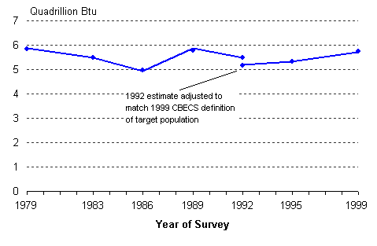
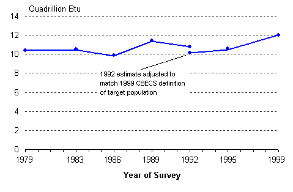
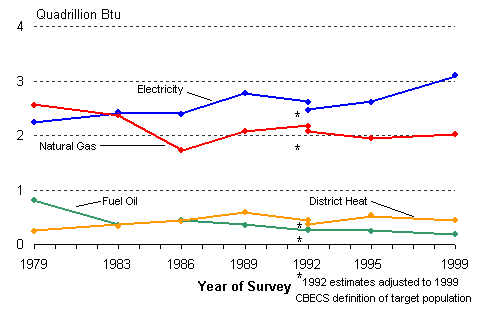
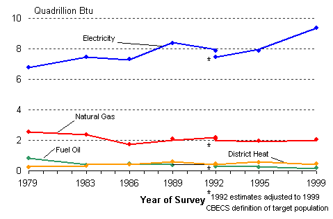

|
Part 2. Energy Intensity Data Tables
Site and Primary Energy |
Trends in Energy Consumption and Energy Sources Part 1. Energy Consumption The CBECS collects energy consumption statistics from energy suppliers for four major energy sources—electricity, natural gas, fuel oil, and district heat—and collects information from the sampled buildings on the use of the four major sources and other energy sources (e.g., district chilled water, solar, wood). Energy consumed in commercial buildings is a significant fraction of that consumed in all end-use sectors. In 2000, about 17 percent of total energy was consumed in the commercial sector. Total Energy Consumption The trend in total energy consumption of the major energy sources in commercial buildings remained flat from 1979 to 1999 (Figure 1). In contrast, commercial activity—both the number of commercial buildings and amount of floorspace—increased over the period (see Trends in Buildings and Floorspace). | |||||
From 1979 to 1999, site energy consumption was unchanged. |
Figure 1. Total Site Consumption, 1979 to 1999

Energy Information Administration Commercial Buildings Energy Consumption Survey Graph detail and data table The CBECS collects from energy suppliers the amount of energy consumed directly by the building—this consumpion is termed site energy consumption (Figure 1). Primary energy consumption is site energy plus the energy consumed (elsewhere) to generate and transmit the electricity supplied to the building (see Site and Primary Energy for additional information). The primary consumption trend, like the site consumption trend, remained flat from 1979 to 1999 (Figure 2). | |||||
Primary energy consumption remained flat across the period, 1979 to 1999. |
Figure 2. Total Primary Consumption, 1979 to 1999

Energy Information Administration Commercial Buildings Energy Consumption Survey Graph detail and data table Consumption by Energy Source While total consumption remained unchanged between 1979 and 1999, consumption of the major fuels did change (Figures 3 and 4). Both site electricity and natural gas consumption greatly exceeded the other sources; and by 1986, site electricity exceeded natural gas consumption. Fuel oil consumption declined steadily, from 0.8 quadrillion Btu in 1979 to less than 0.2 quadrillion Btu in 1999. Over the same period, district heat consumption increased from 0.2 quadrillion Btu to 0.4 quadrillion Btu. Primary electricity consumption exceeded all the other major energy sources combined across the period (Figure 4). | |||||
After 1983, site electricity consumption exceeded all other energy sources. |
Figure 3. Site Consumption by Source, 1979 to 1999

Energy Information Administration Commercial Buildings Energy Consumption Survey Graph detail and data tables: Site electricity Natural gas Fuel oil District heat | |||||
Primary electricity consumption exceeded all other energy sources combined across the period. |
Figure 4. Primary Consumption by Source, 1979 to 1999

Energy Information Administration Commercial Buildings Energy Consumption Survey Graph detail and data tables: Primary electricity Natural gas Fuel oil District heat Top Continue to “Part 2. Energy Intensity” Return to “Trends Introduction” Specific questions may be directed to: Alan Swenson alan.swenson@eia.doe.gov
Release date: 01/12/2000 If you are having any technical problems with this site, please contact the EIA webmaster at wmaster@eia.doe.gov.
|